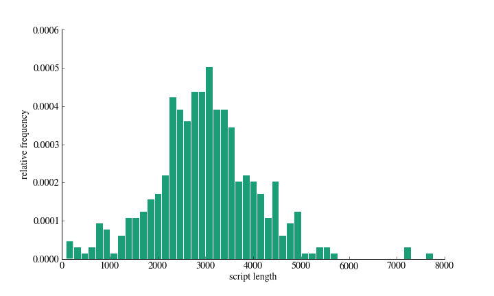

J. Ben Cook, W. Ryan Lee, Conor Myhrvold, and Daniel Newman
After some pre-processing the length of the scripts follow a fairly Gaussian distribution:
In order to reduce the dimensionality of the dataset, we perform Latent Dirichlet Allocation (LDA) on our script corpus to discover 50 topics (Blei, Ng and Jordan, 2003).
A document is a vector of words: w=[w1,w2,…,wN], where wi is the ith word in the sequence. A corpus is a collection of M documents: D = [w1,w2,…,wM]
After taking at how topics are distributed in our corpus, we use topics as a feature in our regression analyses. With our 50 topics, each script gets a score for each topic between 0 and 1 indicating the proportion of the script that was generated form a given topic. These are considered numerical features and help us predict genre and box office success.